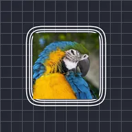

Kontur Çizgileri

Katmanın opak kısımlarının çevresine dış hat halkaları çizer; üst üste çıkartma veya neon dış hatlar için.
Ayarlar
| Ayar | Tür | Aralık | Varsayılan |
|---|---|---|---|
| Renk | Renk | – | #FFFFFF |
| Dışa taşma | Sayı | 1 – 300 | 20 |
| Genişlik | Sayı | 0 – 100 | 3 |
| Alfa | Sayı | 0% – 100% | 100% |
| Dolgu | Sayı | 0% – 100% | 100% |
| Adet | Sayı | 1 – 10 | 1 |
| Faz | Sayı | -999 – 999 | 0 |